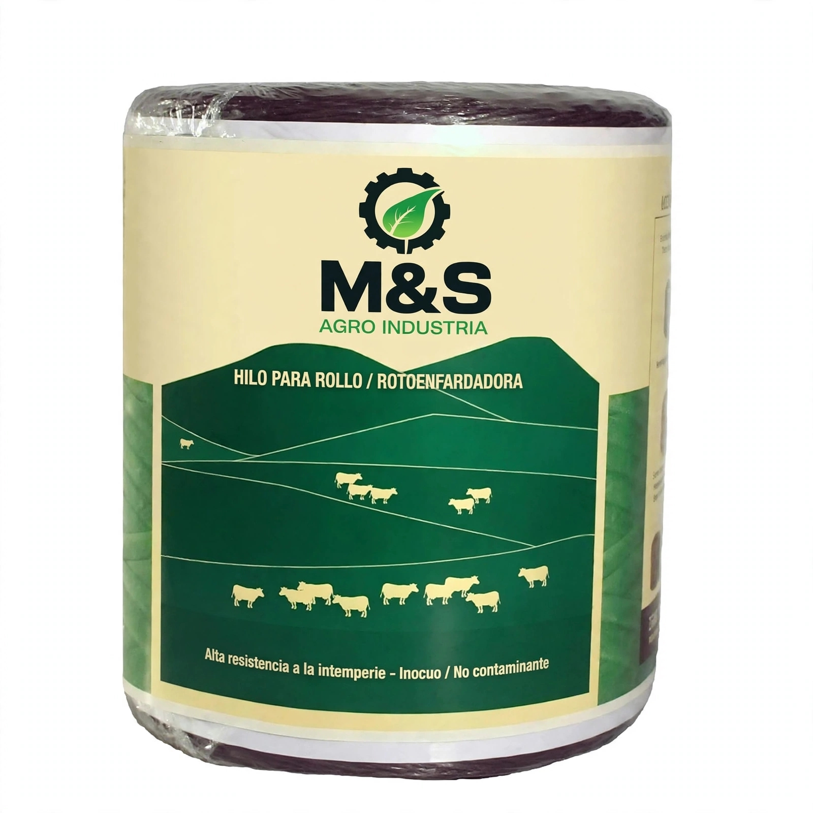

Hilo de Arrollar para Rotoenfardadora
Hilo de polipropileno de alta tenacidad para atado de fardos y enfardado agrícola.
Consultá disponibilidad y condiciones de venta.
Consultar por WhatsApp Volver al catálogo
Hilo de polipropileno de alta tenacidad para atado de fardos y enfardado agrícola.
Consultá disponibilidad y condiciones de venta.
Consultar por WhatsApp Volver al catálogo